교육데이터플랫폼의 분석지원 > 이용자 통계분석 메뉴로 접속합니다. 화면을 열면 작업 공간이 자동으로 만들어집니다.
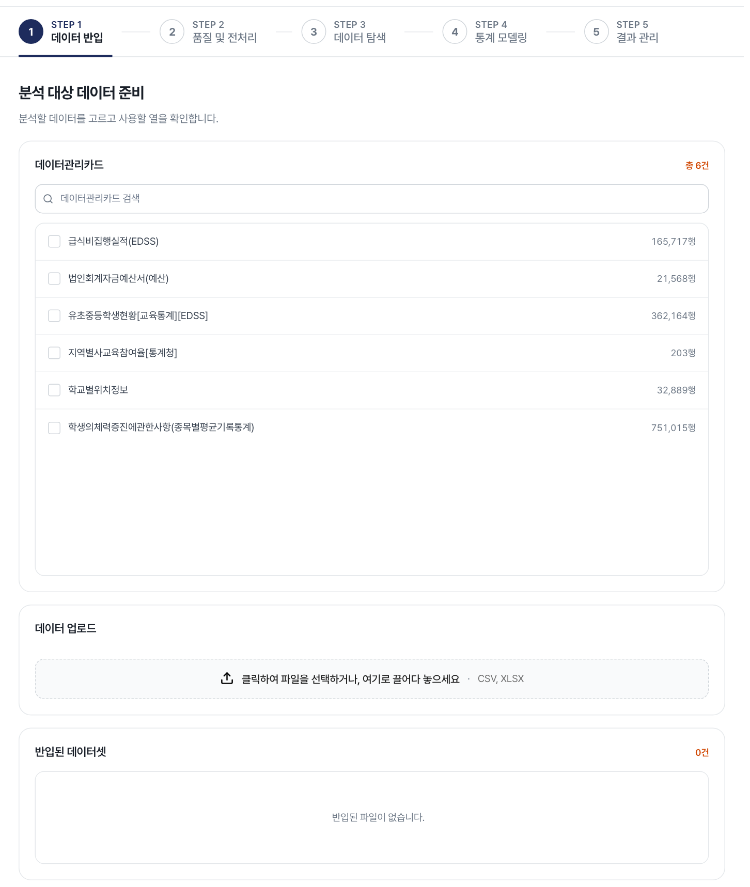
| 번호 | 설명 |
|---|---|
| 1 | 단계 바: 지금 어느 단계인지 보여 줍니다. 단계 이름을 누르면 이동합니다. |
| 2 | 데이터관리카드: 플랫폼에 등록된 데이터 목록입니다. 이름 앞의 네모로 선택합니다. |
| 3 | 데이터 업로드: 내 파일(CSV, XLSX)을 올리는 영역입니다. |
| 4 | 반입된 데이터셋: 올린 파일과 결합한 결과가 표시됩니다. |
| ※ 단계 바에서 2단계의 이상치 탐지를 하기 전에는 3·4단계로 건너뛸 수 없습니다. 5단계(결과 관리)는 언제든 이동할 수 있습니다. |
반입한 데이터와 분석 결과는 임시로 보관됩니다. 필요한 결과는 반드시 분석 패키지로 저장해 두세요.
| 번호 | 내용 |
|---|---|
| 1 | 작업 보관 시간: 마지막으로 사용한 뒤 일정 시간이 지나면 반입한 데이터와 분석 결과가 자동으로 삭제됩니다. |
| 2 | 분석 패키지: 4-2 결과 화면의 [결과 저장]으로 저장하면 5단계에서 다시 열 수 있습니다(작업 보관 시간 안에서). |
| 3 | 공유 링크: 5단계에서 공유 링크를 만든 패키지만 7일 동안 보관되고, 링크를 받은 사람은 누구나 볼 수 있습니다. |
| 4 | 파일 올리기 한도: CSV, XLSX 파일을 한 개당 최대 10MB까지 올릴 수 있습니다. |
| 5 | 선택 한도: 데이터관리카드는 최대 2개, 올린 파일은 선택한 것의 합계 30MB 이하여야 분석·결합에 쓸 수 있습니다. |
| ※ 오래 두고 쓰려면 PDF 보고서나 Excel로 내려받아 보관하세요. ※ 화면 오른쪽 아래에 잠시 나타나는 알림은 성공 3초, 오류 4초 뒤 저절로 사라집니다. 입력 오류는 해당 칸 아래에 빨간 글씨로 표시됩니다. ※ 반입한 파일의 크기는 1MB 이상이면 MB, 그보다 작으면 KB(1KB 미만은 B)로 표시됩니다. |
분석할 데이터를 데이터관리카드에서 고르거나 내 파일을 올립니다.
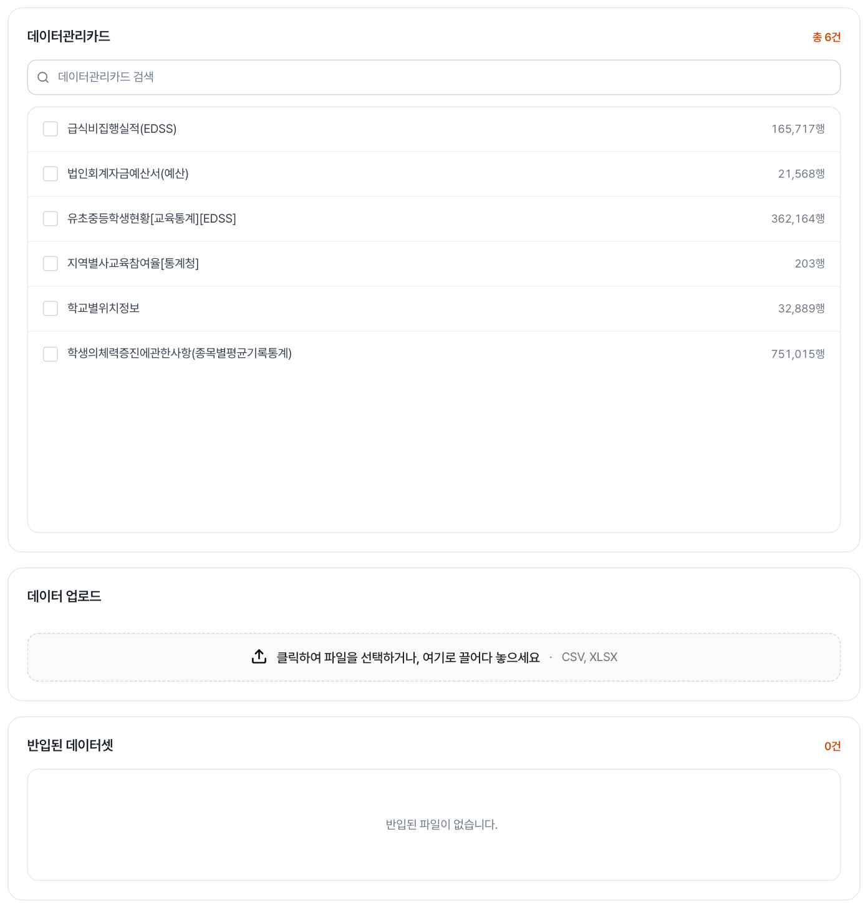
| 번호 | 설명 |
|---|---|
| 1 | 검색: 데이터관리카드 이름을 쓰면 목록이 걸러집니다. |
| 2 | 카드 목록: 이름 앞의 네모를 눌러 선택합니다. 오른쪽에 행 수가 표시됩니다. 적재가 끝난 카드만 나타납니다. |
| 3 | 파일 올리기: 영역을 누르거나 파일을 끌어다 놓습니다. 올리면 자동으로 선택됩니다. |
| 4 | 반입된 데이터셋: 올린 파일 목록입니다. 오른쪽 휴지통으로 삭제합니다. |
데이터를 고를 때는 아래 규칙이 적용되며, 규칙에 걸리면 화면에 안내가 나옵니다.
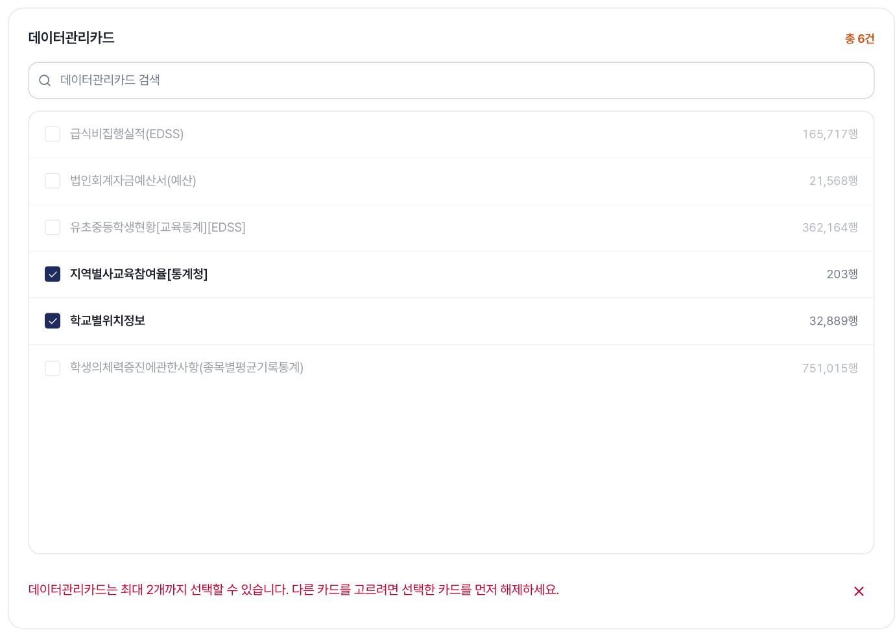
| 번호 | 설명 |
|---|---|
| 1 | 선택한 카드: 체크된 카드입니다. 최대 2개까지 고를 수 있습니다. |
| 2 | 선택할 수 없는 카드: 카드를 2개 고르면 나머지는 흐려져 선택할 수 없습니다. |
| 3 | 안내 문구: 카드 목록 아래에 빨간 글씨로 선택 한도를 알려 줍니다. 카드를 해제하면 사라집니다. |
| ※ 올린 파일은 선택한 것의 합계가 30MB 이하여야 합니다. 합계를 넘으면 선택되지 않습니다. ※ 결합한 데이터셋을 선택하면 데이터관리카드와 다른 파일은 선택할 수 없고, 반입된 데이터셋 아래에 주황색 안내가 나옵니다. |
데이터를 고르면 아래에 선택한 데이터와 데이터 미리보기가 나타납니다.
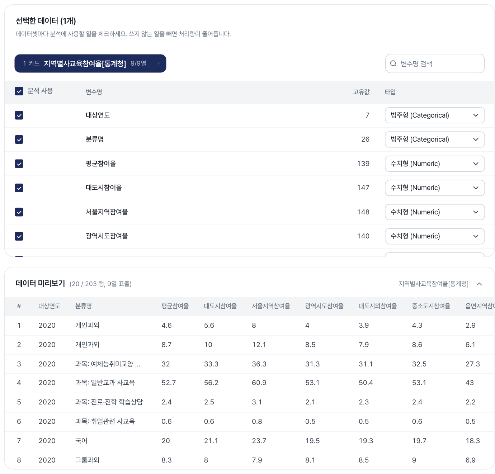
| 번호 | 설명 |
|---|---|
| 1 | 데이터 탭: 여러 개를 골랐을 때 탭을 눌러 데이터를 바꿔 봅니다. 탭의 ×로 선택을 해제합니다. |
| 2 | 분석 사용: 분석에 쓰지 않을 열은 체크를 풉니다. 맨 위 체크로 전체 선택·해제를 합니다. |
| 3 | 타입: 열의 종류를 바꿉니다(수치형, 범주형, 논리형, 일시형, 문자형, 식별자, 상수). 바꾸면 바로 저장됩니다. |
| 4 | 변수명 검색: 열이 많을 때 이름으로 찾습니다. |
| 5 | 데이터 미리보기: 20행씩 보여 주고, 아래로 스크롤하면 이어서 불러옵니다. 제목 줄을 누르면 접고 펼칩니다. |
| ※ 학교 코드처럼 숫자로 보이지만 계산에 쓰지 않는 열은 타입을 범주형이나 식별자로 바꾸세요. |
데이터를 2개 고르면 데이터 결합 영역이 나타납니다. 같은 값을 가진 열(키)을 기준으로 두 데이터를 옆으로 붙입니다.
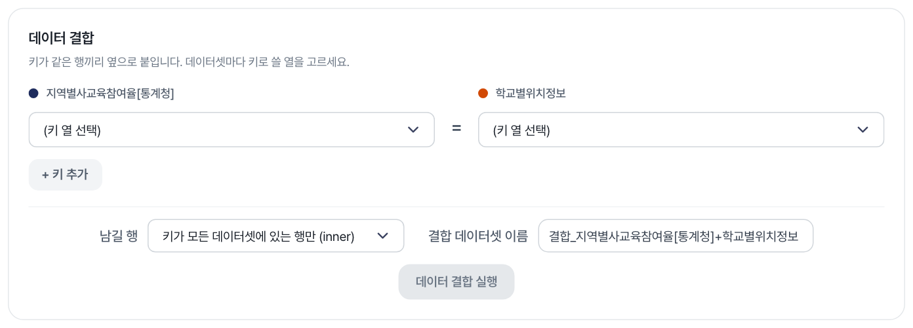
| 번호 | 설명 |
|---|---|
| 1 | 키 열: 데이터셋마다 기준이 될 열을 고릅니다. [+ 키 추가]로 키를 더 쓸 수 있습니다. |
| 2 | 남길 행: 모든 데이터에 키가 있는 행만 / 첫 번째 데이터의 행 모두 / 마지막 데이터의 행 모두 / 어느 한쪽에라도 있는 행 모두. |
| 3 | 결합 데이터셋 이름: 결과의 이름입니다. |
| 4 | 데이터 결합 실행: 눌러서 결합합니다. 끝나면 "결합이 완료되었습니다." 알림이 뜨고 결합 결과 하나만 선택됩니다. |
| ※ 선택한 데이터, 사용할 열, 키, 남길 행을 바꾸면 이전 결과는 무효가 되어 버튼이 [다시 결합]으로 바뀝니다. ※ 결합에 실패하면 버튼 아래에 이유가 그대로 표시됩니다(예: 결과 행이 너무 많음). |
다른 값들과 동떨어진 값(이상치)을 찾습니다. 이상치 탐지를 실행해야 다음 단계로 갈 수 있습니다.
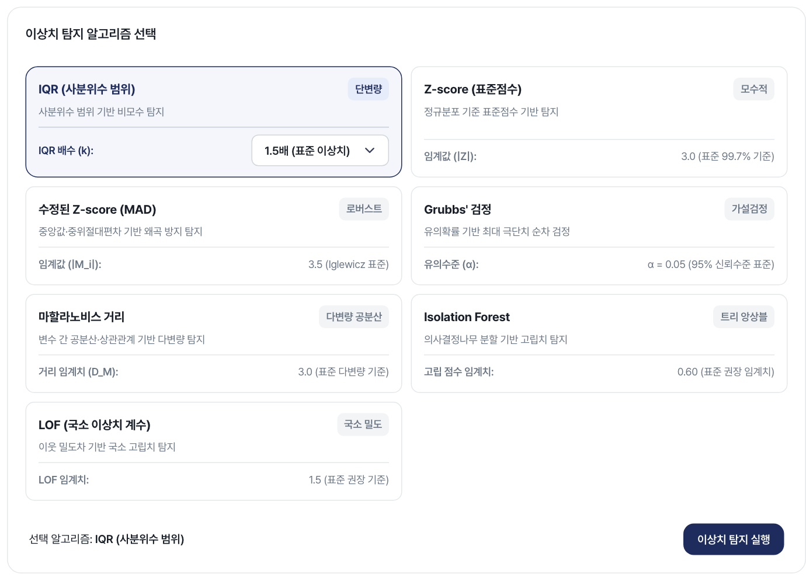
| 번호 | 설명 |
|---|---|
| 1 | 탐지 알고리즘 카드: 방법을 하나 누릅니다. 선택하면 남색 테두리가 생깁니다. |
| 2 | 기준값(임계값): 선택한 카드에서 기준값을 고릅니다. 기본값이 들어 있습니다. |
| 3 | 이상치 탐지 실행: 눌러서 탐지합니다. |
데이터 성격에 맞는 방법을 고르세요. 잘 모르면 IQR이 가장 무난합니다.
| 방법 | 특징 |
|---|---|
| IQR (사분위수 범위) | 사분위수 범위를 벗어나는 값을 찾습니다. 분포를 가정하지 않습니다. |
| Z-score (표준점수) | 평균에서 표준편차의 몇 배나 떨어졌는지로 판단합니다. 정규분포에 가까울 때 적합합니다. |
| 수정된 Z-score (MAD) | 중앙값 기반이라 극단값의 영향을 덜 받습니다. |
| Grubbs 검정 | 가장 극단적인 값을 하나씩 검정합니다. |
| 마할라노비스 거리 | 여러 변수의 관계를 함께 고려해 탐지합니다(다변량). |
| Isolation Forest | 의사결정나무로 다른 값들과 잘 분리되는 값을 찾습니다. |
| LOF (국소 이상치 계수) | 주변 값들과 밀도를 비교해 외딴 값을 찾습니다. |
| ※ 임계값이 작을수록 더 많은 값이 이상치로 잡힙니다. |
탐지가 끝나면 데이터 상태가 숫자와 표로 나옵니다.
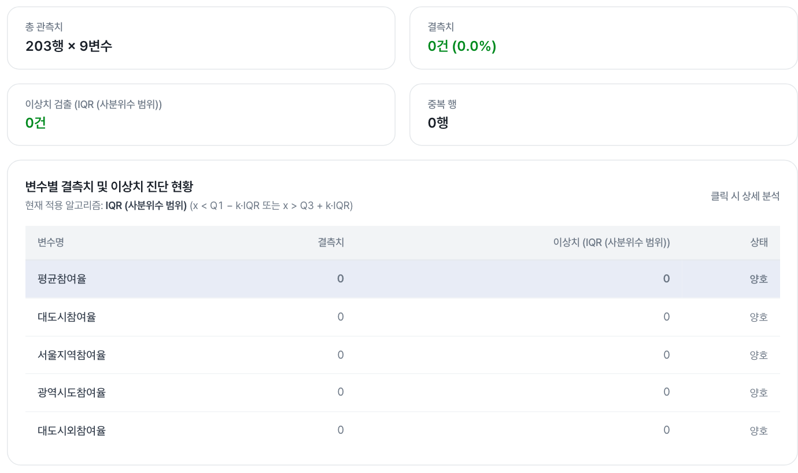
| 번호 | 설명 |
|---|---|
| 1 | 숫자 카드 4개: 총 관측치, 결측치, 이상치 검출, 중복 행입니다. 탐지 전 이상치는 회색 "탐지 전"으로 보이고, 탐지 후 0건이면 초록, 1건 이상이면 빨강으로 표시됩니다. 결측치도 같은 규칙입니다. |
| 2 | 변수별 진단 현황: 변수마다 결측치·이상치 개수, 이상치 비율, 왜도가 나옵니다(탐지 전에는 이상치 칸이 "-"). 서버가 준 값만 보여 주며 화면이 좋고 나쁨을 판정하지 않습니다. 변수 행을 누르면 아래에 최솟값~최댓값, 판단 경계, 검출된 값이 표시됩니다. |
분석 전에 데이터를 어떻게 정리할지 네 가지 항목마다 하나씩 고릅니다. 기본값은 각 항목의 맨 위 선택지입니다.
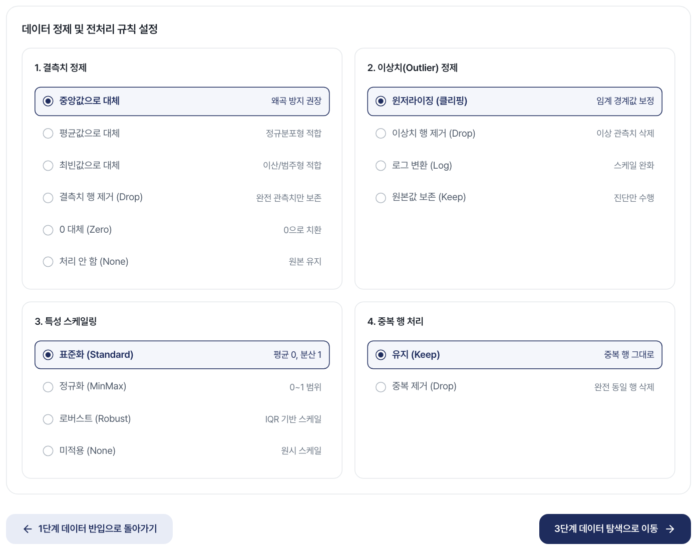
| 번호 | 설명 |
|---|---|
| 1 | 결측치 정제: 중앙값·평균값·최빈값 대체, 결측치 행 제거, 0 대체, 처리 안 함 |
| 2 | 이상치 정제: 윈저라이징(경계값으로 바꿈), 이상치 행 제거, 로그 변환, 원본값 보존 |
| 3 | 특성 스케일링: 표준화, 정규화(MinMax), 로버스트, 미적용 |
| 4 | 중복 행 처리: 유지 / 중복 제거 |
| 5 | 3단계로 이동: 이상치 탐지를 실행한 뒤에만 눌립니다. 규칙을 적용한 새 데이터로 이동하며 원본은 그대로 남습니다. |
전처리한 데이터의 기본 통계를 변수마다 보여 줍니다.
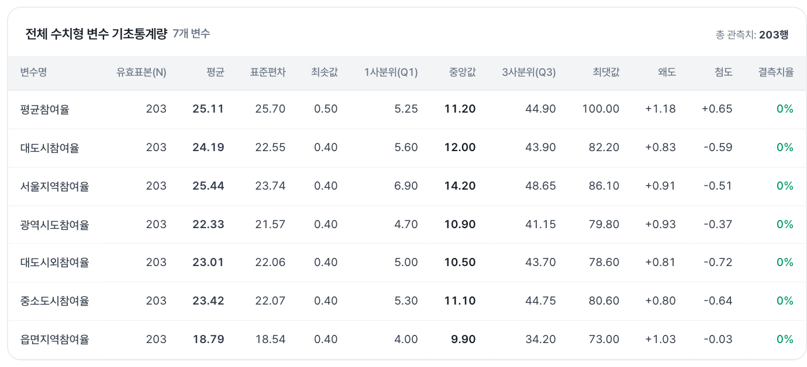
| 번호 | 설명 |
|---|---|
| 1 | 변수 수와 총 관측치: 분석에 쓰는 수치형 변수의 수와 행 수입니다. |
| 2 | 변수별 통계: 유효표본(N), 평균, 표준편차, 최솟값, 사분위수, 최댓값, 왜도, 첨도, 결측률이 나옵니다. 변수가 많으면 표 안에서 스크롤합니다. |
변수들이 서로 얼마나 함께 움직이는지 −1~+1 사이 값으로 보여 줍니다.
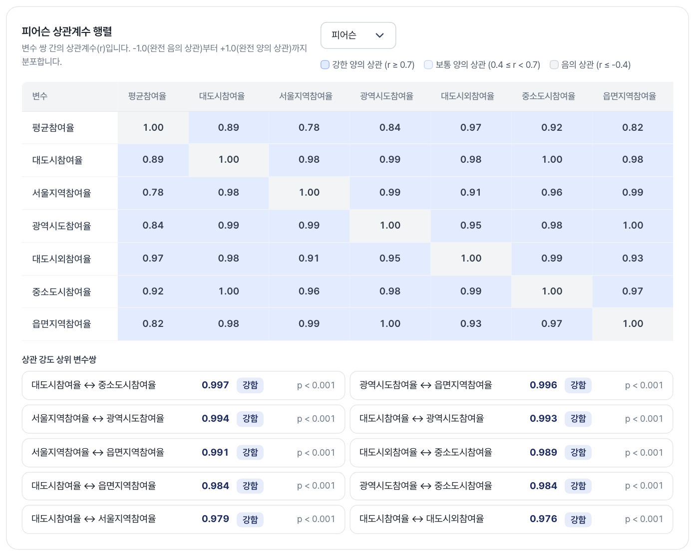
| 번호 | 설명 |
|---|---|
| 1 | 상관계수 방법: 피어슨, 스피어만, 켄달 중에서 고르면 다시 계산됩니다. |
| 2 | 상관계수 행렬: 변수 쌍의 상관계수입니다. 색이 진할수록 관계가 강합니다. |
| 3 | 상관 강도 상위 변수쌍: 상관이 가장 큰 10쌍을 계수, 강도, 유의확률과 함께 보여 줍니다. |
| ※ 살펴본 뒤 화면 아래의 [4단계 모형 설정으로 이동]을 누릅니다. |
분석 기법 13가지 중 목적에 맞는 것을 고릅니다.
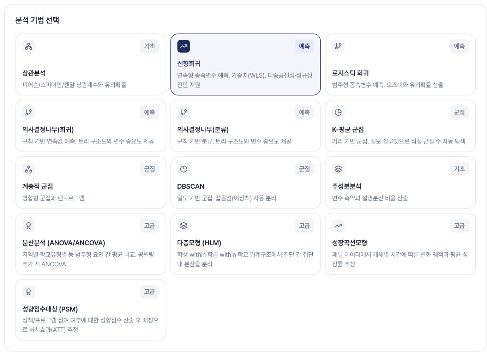
| 번호 | 설명 |
|---|---|
| 1 | 선택한 기법: 남색 테두리로 표시됩니다. 카드 오른쪽 위의 칩이 분류(기초·예측·군집·고급)입니다. |
| 2 | 다른 기법 카드: 눌러서 기법을 바꿉니다. 아래의 변수 설정이 기법에 맞게 바뀝니다. |
| 기법 | 분류 | 언제 쓰나요 |
|---|---|---|
| 상관분석 | 기초 | 변수들이 서로 얼마나 함께 움직이는지 볼 때 |
| 주성분분석 | 기초 | 변수를 핵심 축으로 줄이고 설명 비율을 볼 때 |
| 선형회귀 | 예측 | 연속된 숫자(예: 참여율)를 다른 변수로 설명·예측할 때 |
| 로지스틱 회귀 | 예측 | 예/아니오 같은 분류 결과를 예측할 때 |
| 의사결정나무(회귀·분류) | 예측 | 조건 분기로 예측하고 변수 중요도를 볼 때 |
| K-평균·계층적·DBSCAN 군집 | 군집 | 비슷한 것끼리 묶을 때 |
| 분산분석 (ANOVA/ANCOVA) | 고급 | 집단 사이 평균 차이를 비교할 때 |
| 다층모형 (HLM) | 고급 | 학생-학급-학교처럼 겹구조의 집단 간·내 분산을 나눌 때 |
| 성장곡선모형 | 고급 | 시간에 따라 반복 측정한 변화 추세를 볼 때 |
| 성향점수매칭 (PSM) | 고급 | 정책·프로그램 참여 효과를 비슷한 대상끼리 비교해 추정할 때 |
| ※ 잘 모르겠다면 상관분석으로 변수 관계를 먼저 살핀 뒤 선형회귀를 해 보세요. |
기법을 고르면 그 기법에 필요한 항목만 나타납니다. 종속변수가 필요한 기법은 첫 수치형 변수가 종속변수로, 앞의 수치형 변수 4개가 독립변수로 미리 선택됩니다.
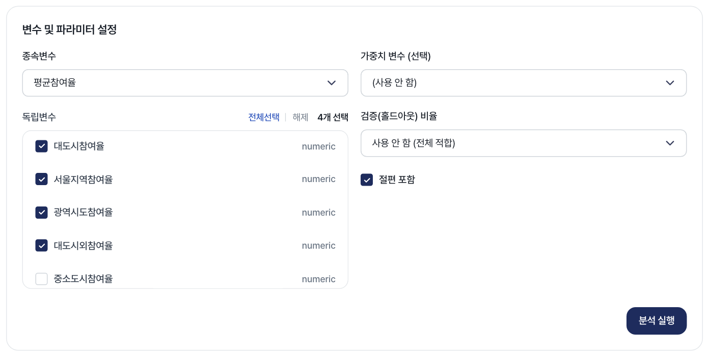
| 번호 | 설명 |
|---|---|
| 1 | 종속변수: 결과로 설명하려는 변수입니다. |
| 2 | 전체선택 / 해제: 독립변수를 한 번에 선택하거나 해제합니다. 선택한 개수가 옆에 표시됩니다. |
| 3 | 독립변수 목록: 설명에 쓸 변수를 체크합니다. 종속변수는 자동으로 빠집니다. |
| 4 | 분석 실행: 눌러서 분석을 시작합니다. |
| ※ 선택 칸에 필수 선택이라고 보이면 반드시 골라야 합니다. 선택 사항인 칸은 "(사용 안 함)"으로 보이며 비워 두어도 됩니다. |
분석이 끝나면 결과 화면으로 가는 버튼이 켜집니다.
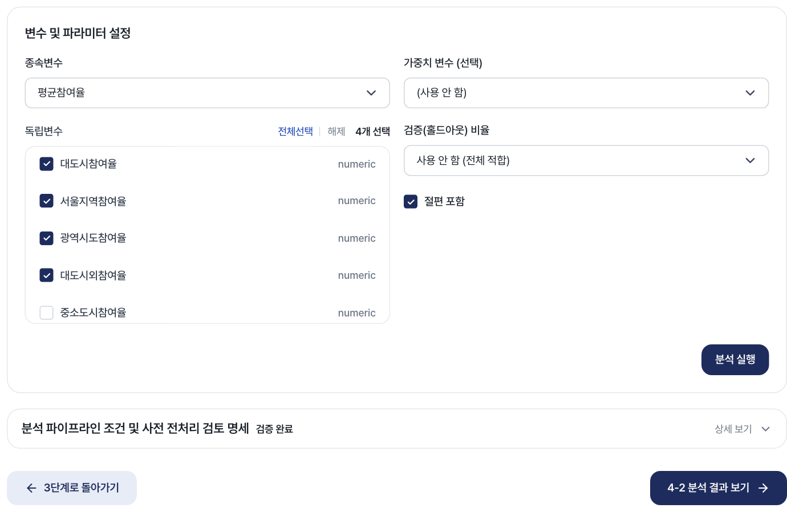
| 번호 | 설명 |
|---|---|
| 1 | 분석 실행: 실행 중에는 "분석 연산 수행 중…"으로 바뀝니다. 성공하면 "분석이 완료되었습니다." 알림이 뜹니다. |
| 2 | 4-2 분석 결과 보기: 분석이 성공으로 끝나기 전에는 회색으로 비활성입니다. 새 분석을 시작하면 다시 비활성이 되고, 완료되면 켜집니다. |
| ※ 분석이 실패하면 입력 칸 아래에 빨간 글씨로 이유가 나옵니다(예: 필수 항목을 선택하세요). 이유를 고친 뒤 다시 실행하세요. |
분석 결과를 표와 숫자 카드로 보여 줍니다.
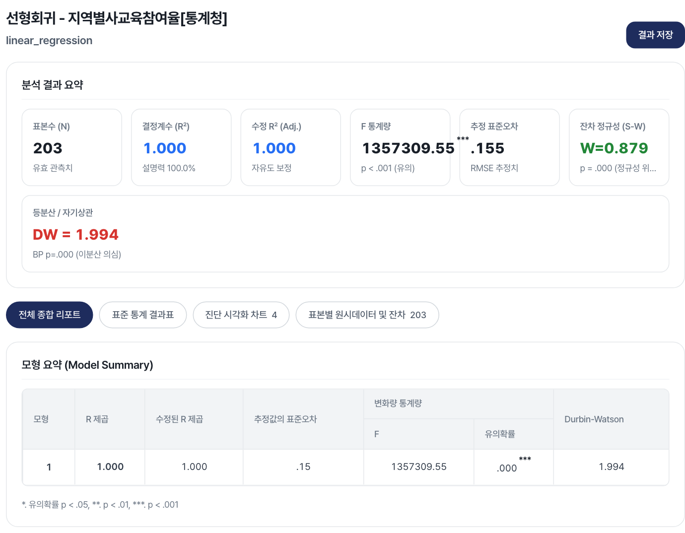
| 번호 | 설명 |
|---|---|
| 1 | 결과 저장: 이 분석을 분석 패키지로 저장합니다. 5단계에서 다시 열 수 있습니다. |
| 2 | 탭: 전체 종합 리포트 / 표준 통계 결과표 / 진단 시각화 차트 / 표본별 원시데이터 및 잔차를 바꿔 봅니다. |
| 3 | 요약 지표 카드: 핵심 숫자를 한눈에 봅니다. |
| 4 | 표준 통계 결과표: 기법별 결과표입니다(예: 모형 요약, 분산분석, 계수). |
| ※ 표의 별표는 유의수준입니다. 표 아래 설명(*: p < .05, **: p < .01, ***: p < .001)을 참고하세요. ※ 표 아래의 안내 문구는 분석 결과에 포함되어 나온 내용입니다. |
분석에 맞는 차트를 추천 순서대로 보여 줍니다.
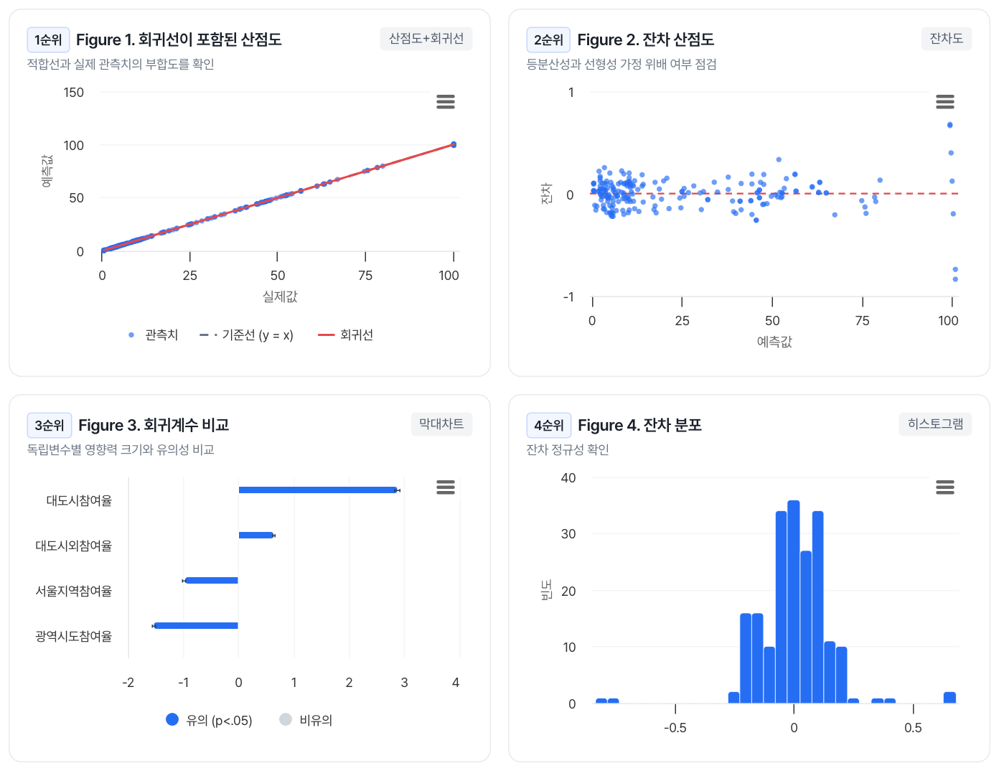
| 번호 | 설명 |
|---|---|
| 1 | 차트 카드: 차트 제목, 설명, 그림이 나옵니다. 카드를 누르면 크게 볼 수 있습니다. |
| 2 | 다른 차트: 회귀선 산점도, 잔차 산점도, 회귀계수 비교, 잔차 분포 등 기법에 맞는 차트가 나옵니다. |
| ※ 크게 보기 화면에서 [차트 데이터]를 누르면 차트를 만든 원본 값을 표로 볼 수 있습니다. |
저장한 분석 패키지를 다시 열어 보고, 공유하고, 같은 조건으로 다시 분석합니다.
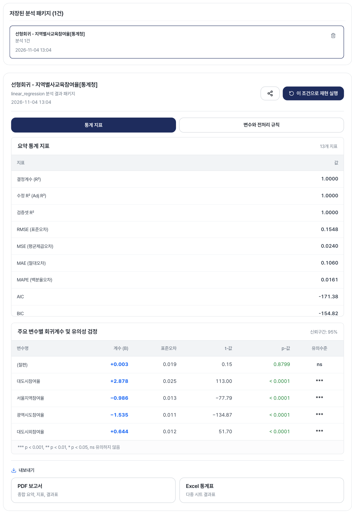
| 번호 | 설명 |
|---|---|
| 1 | 패키지 목록: 저장한 패키지입니다. 누르면 오른쪽에 상세가 나옵니다. 휴지통 아이콘으로 삭제합니다. |
| 2 | 공유: 공유 링크를 만듭니다. 링크가 있는 패키지는 7일 동안 보관되며, 링크를 받은 사람은 로그인 없이 결과를 볼 수 있습니다. |
| 3 | 이 조건으로 재현 실행: 같은 기법·변수·전처리 규칙으로 4-1 화면을 채워 줍니다. 원본 데이터가 남아 있을 때만 쓸 수 있고, 실행은 직접 눌러야 합니다. |
| 4 | 탭: 통계 지표 / 변수와 전처리 규칙을 바꿔 봅니다. |
패키지 상세 맨 아래에서 결과를 파일로 내려받습니다. 4-2 결과 화면과 같은 구성입니다.
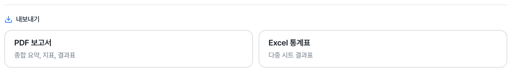
| 번호 | 설명 |
|---|---|
| 1 | PDF 보고서: 지표 카드, 통계표, 차트가 들어갑니다. 분석이 여러 개면 분석마다 새 쪽에서 시작합니다. 분석 수가 많으면 만드는 데 시간이 걸립니다. |
| 2 | Excel 통계표: 분석마다 시트 하나로 만들어지고, 숫자는 엑셀에서 계산할 수 있는 숫자로 들어갑니다. 차트는 들어 있지 않습니다. |
| ※ 오류가 나면 잠시 뒤 다시 시도하세요. 계속되면 화면에 나온 오류 문구를 담당자에게 전달하세요. |